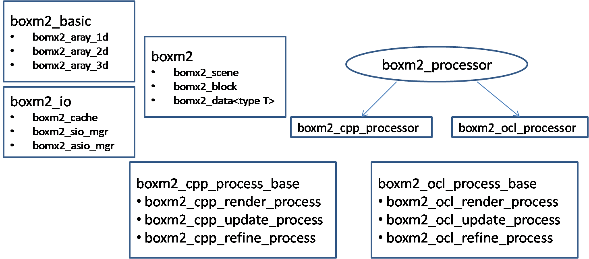
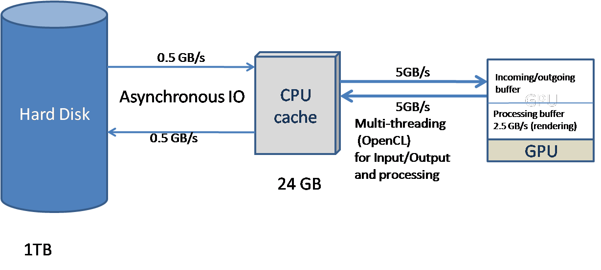

| [ < ] | [ > ] | [ << ] | [ Up ] | [ >> ] | [Top] | [Contents] | [Index] | [ ? ] |
Chapter summary:
BOXM2 is a VXL accelerated probabilistic volumetric modeling library. BOXM2 is developed in c++ along with a parallel implementation in OpenCL for accelerated performance. While higher-level language C++ implementation is crucial for debugging and development of new algorithms, the OpenCL implementation is required for efficient running of algorithms in real-application systems or demonstrations. The desgin or ideas for this implementation has evolved over past few years and has been assimilated from existing library BOXM and BVXM. BOXM2 is designed mainly to overcome limitations of these libraries and also facilitate parallel development of accelerated library in OpenCL.The major advantages of BOXM2 libraries over its predecessors are listed below:
- A common set of data structures are used for both C++ and OpenCL implementation which facilitates intermixing of C++ code for memory intensive jobs and OpenCL code for computation intensive jobs.
- The structure of the scene which is a grid of shallow octrees encoded by bit streams is separated from the data represented at each cell of the volume. This provides flexibility of using the structure of the scene with multiple data streams without loading all different data streams.
- This library is designed to handle huge amount of data by processing streams of data. The latency of disk I/O is hidden by using a) cache with LRU or nearest neighbor implementations and b) asynchronous I/O (brl/bbas/baio). The latency of data I/O from main memory to GPU memory is hidden by using double buffering concept.
- This library also facilitates representation of multi-resolution data.
| [ < ] | [ > ] | [ << ] | [ Up ] | [ >> ] | [Top] | [Contents] | [Index] | [ ? ] |
The predecessors of BOXM2 are BVXM and BOXM. BVXM was developed at Brown university for modeling volumes with fixed grid for multiple modalities. This library was developed using a fixed grid and therefore required hue amount of storage which was later mitigated by using octrees in BOXM. BOXM implemented octrees for modeling volumetric data but had few limitations such as data stroed inside the tree structure leading to inefficient implementations.
Design goals:

| [ < ] | [ > ] | [ << ] | [ Up ] | [ >> ] | [Top] | [Contents] | [Index] | [ ? ] |
OpenCL (Open Computing Language) is a programming framework for heterogeneous platform consisting of CPUs, GPUs, and other hardware resources. OpenCL is based on C99 for writing functions. OpenCL provides parallel computing using task-based and data-based parallelism based on SIMD architecture. It has been adopted by several vendors such AMD, Nvdia (only GPU), Intel, IBM and many more. OpenCL biggest competitor CUDA has been developed by Nvidia but is only limited to GPUs as well is closed design.
BOXM2 mirror c++ implementation in OpenCL for efficiency purposes. A distinct library brl/bbas/bocl handles most of the OpenCL API calls so as to allow users to program platform independent. The OpenCL implementation also comprises of a cache and use a parallel scheduler system to hide the latency of data transfer form CPU memory to GPU memory in case of GPU implementation.
| [ < ] | [ > ] | [ << ] | [ Up ] | [ >> ] | [Top] | [Contents] | [Index] | [ ? ] |
The scene ( or volume ) to be modeled is broken down into numerous blocks. These blocks can be laid out in sparse or dense 3-d matrix. This kind of setup allows users to model chunks of the volume over a wide area. These blocks further consists of a 3-d grid of shallow octrees. This representation could be more efficient by have a 3-d octree of shallow octrees instead of 3-d grid which will be implemented in the future. The shallow octrees are encoded unconventionally as bit-streams for efficient storage and computation.
The root of each octree stores an absolute index of the data in its respective array. Note that all different data elements can be accessed by the same index. This separation of data and octrees leads to flexibility in using multi-modalities.
| [ < ] | [ > ] | [ << ] | [ Up ] | [ >> ] | [Top] | [Contents] | [Index] | [ ? ] |
One of the major advantages of BOXM2 is to hide the latency of disk I/O by using single threaded asynchronous I/O. The asynchronous I/O has been implemented for Windows, Posix and Mac OS platforms and platform implementations are hidden using the library "baio". The cache loads the nearest blocks asynchronously without blocking execution of the program and assists in hiding disk I/O latency.

| [ < ] | [ > ] | [ << ] | [ Up ] | [ >> ] | [Top] | [Contents] | [Index] | [ ? ] |
This library also provides GUI for real-time rendering and near real-time volume updating of the model using large images.
| [ << ] | [ >> ] | [Top] | [Contents] | [Index] | [ ? ] |
This document was generated on May, 1 2013 using texi2html 1.76.